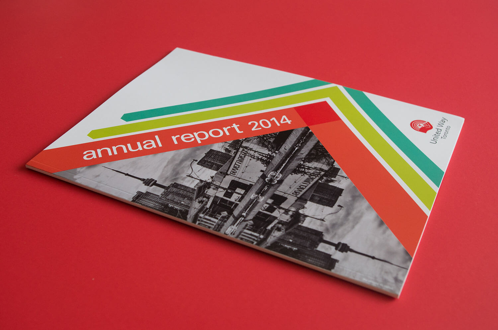
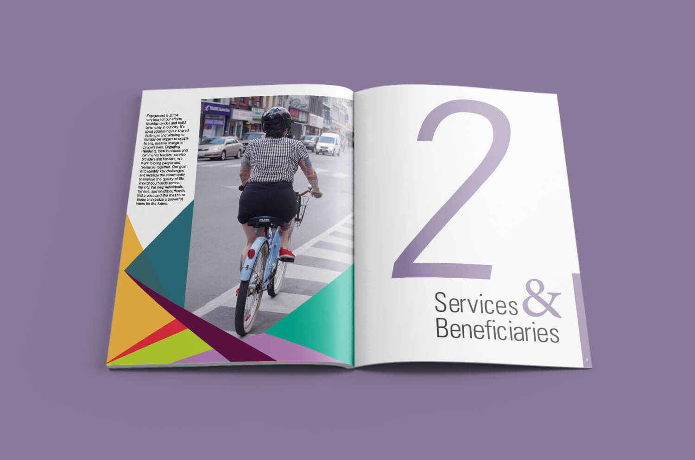
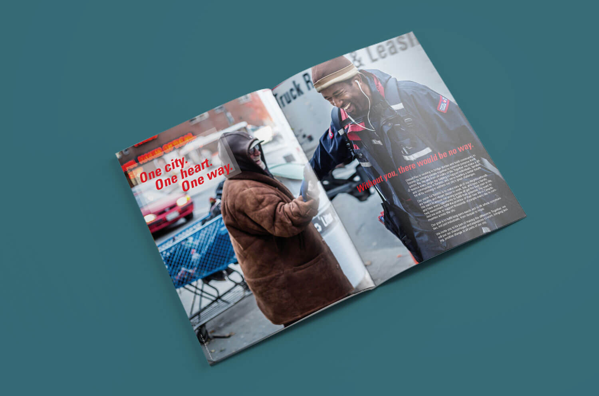
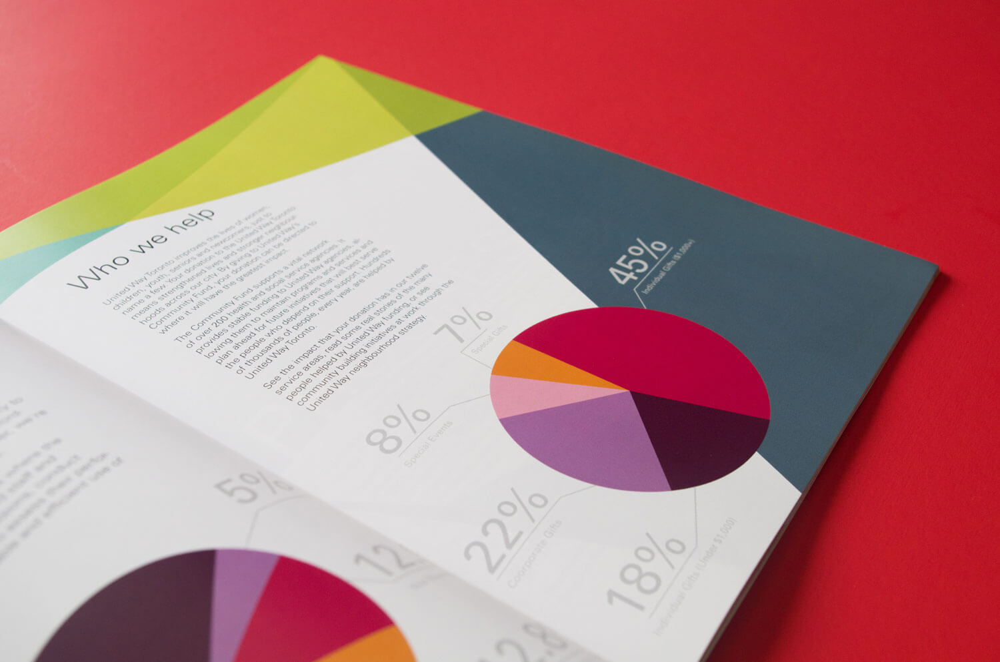
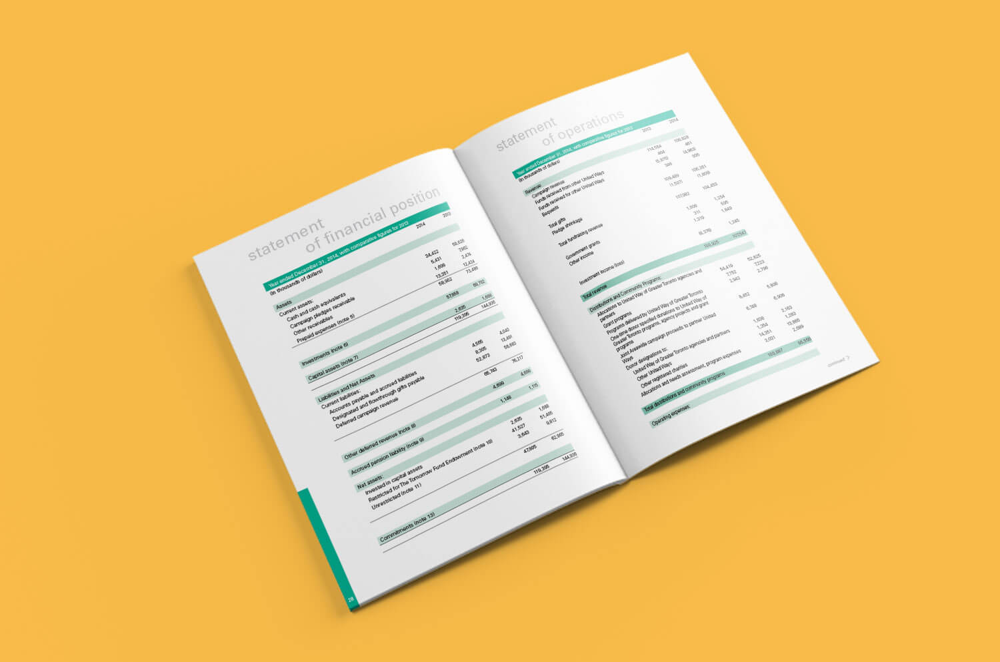
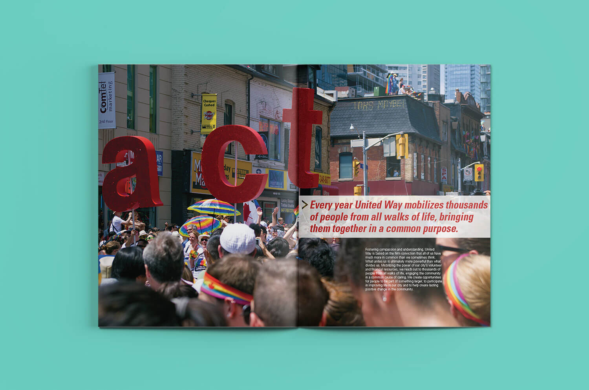
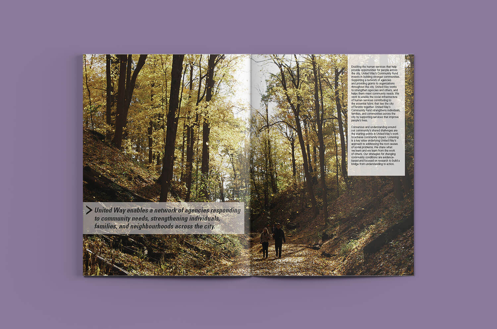
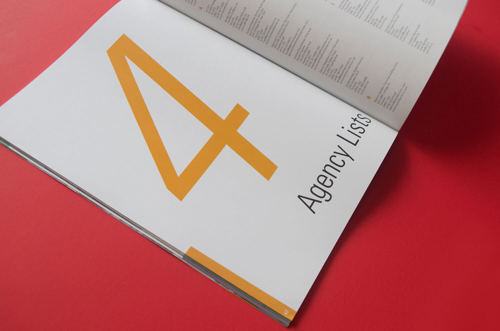
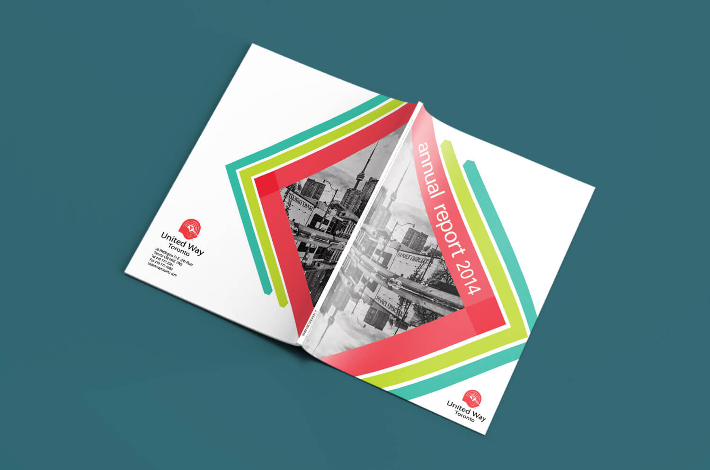

United Way Toronto is the largest non-governmental organization dedicated to supporting social services in the community. This long-serving charity already has an established brand identity. I approached this conceptual design project with a refreshing take on United Way's brand by playing with shape and colour.
Annual Reports are often long and boring documents filled with lots of text and financial charts. In order to make United Way’s Annual Report more interesting, I used eye-catching shapes and colours. I paired each of the four sections with a different colour and created bold title pages to separate them. Throughout the report, I used lively imagery and included some photographs I took that captured the bustle of Toronto.
For the typeface, I used Univers Lt Std—a neo-grotesque sans-serif font. It is easy to read and has a large range of styles and weights to create a cohesive report.







